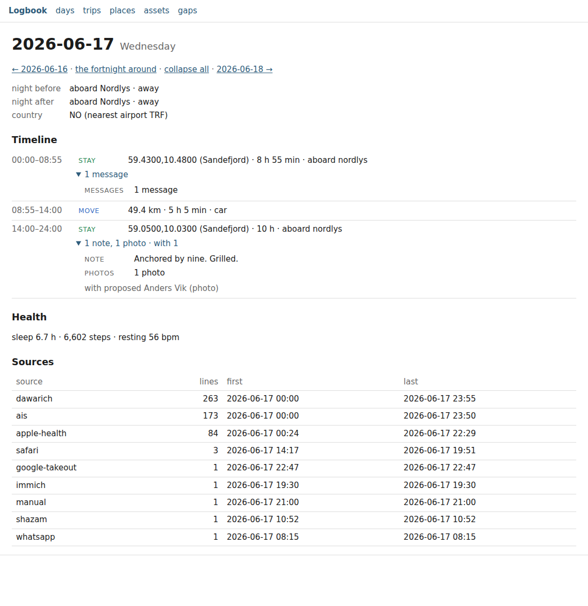

The record in a browser
logbook serve reads the record in a browser, on this machine only.
logbook serve # http://127.0.0.1:8765/
logbook serve --port 8080
logbook serve --install-service # kept running by launchd or systemd (As a service, below)
It is a reader (ADR 0013) with another output: the pages are the commands' own readers rendered as HTML instead of text, built from the index and nothing else, and nothing is written by reading. Open the address it prints, read, close it. There is no login because there is no one to log in: the server answers this machine and no other. Four pages ask you something and write your answer, each through the command that writes the same thing: the Places page names the places you return to (Places — name this place), a journey's page names the journey (Journeys), the People page merges or tells apart who the sources saw (People), and the Day is where you reflect on the day and sign it (Reflect and Sign), star a line and say who was there (The Day — Star and With). The acts, from a terminal and on the page, are on their own page.

The demo record (logbook demo --days 30 --seed 1 --out ~/Demo), Wednesday 17 June: a week
aboard the yacht Nordlys. Nothing in it is real.
The pages
| Page | What it is | The command it renders |
|---|---|---|
/day/YYYY-MM-DD |
the Day as a timeline: the nights either side, the country, the signature (or unsigned) with the page digest, the all-day entries, the with row (the day's company, your word marked, and the with… field); your reflection; one row per stay, stop, move, flight or run aboard an asset, in time order, with the clock, the kind and what it was; each row's attachments (events, transcripts with their voices when the line has them, as the Day names them (speakers), notes, mail threads, calls, keepers named; messages counted; photos counted and named) and company (confirmed, then proposed) under a toggle; a star on every row that is a line; what is unplaced; the health line; the sources and when each last spoke; at its foot, Reflect and sign (below) |
logbook day, and logbook day reflect, logbook star, logbook with |
/days?from=&to= |
one row per day of the window, the day a link to its Day: the night, the kilometres moved, the flights, the stays and what attached, the people confirmed, the health triple, the usual sources with no line that day; then Starred, the window's stars, each linked to its row. Without a window, the record's last fortnight; a form and earlier / later links move it | logbook days |
/trips?year= |
the trips of the year: first and last day (a link to those days), nights, route, flights in and out, places, people. Without a year, the record's last; every year the record covers is a link | logbook trips --year |
/journeys?year= |
the journeys that began in the year, the latest first: the name or the dates (a link to the journey), the nights away, the return day, the route, the photos, the places, the people the record names, the draft folded, the evidence folded (Journeys). Without a year, the record's last | logbook show trips --year, grown |
/journeys/FIRST/LAST |
one journey: its name and the form that names it, its draft folded, its stays as dots on a plain canvas and one row each, its days one row each (a link to the Day), the promises made on it, its people and photos | logbook show trip ID |
/people?year= |
the people the record names, by days together in the year (default this year), then the last real contact; below, the review queue of people review, the only place someone the record has not placed appears (People) |
logbook people --year, people review |
/people/ID |
one person: days together by year, the last real contact and what it was, drift and why, the promises open both ways, the anniversaries of the coming month, the places you have been with them | logbook people NAME, people drift |
/manifest?portfolio= |
the orgs you named under what you decided about them (holding, exited, passed — the anti-portfolio, each reason in full —, let go, no status), the most recent touch first, the stale ones flagged, each with its portfolio, each row's evidence folded; a filter by portfolio; below, the review queue of review org with its acts (the Manifest) |
logbook show orgs [--portfolio TEXT], review org |
/org/ID |
one org: its refs, its status, reason and portfolio, the status form (with its portfolio), every touch newest first, its people, who introduced whom, its documents as references, every status line; the ledger only when asked (?money=1) |
logbook show org NAME, status org |
/manifest/people |
the people who appear with more than one org, each with the orgs and the tier of the lines that say so; then the anti-portfolio | logbook show orgs |
/ideas |
the ideas you named by stage (build, exploring, spark, built, killed, no status), the most recent touch first, the stale ones flagged, each with its reason (a killed idea sparked again keeps its old one) and its evidence folded, the people it was discussed with counted and never named; below, the review queue of review idea |
logbook show ideas, logbook review idea |
/idea/ID |
one idea: its refs, its status and reason, the status form, first said, every touch newest first, the people it was discussed with by name, its documents as references (its Notion pages, its repositories and their README), its title thread, the words by month, every status line | logbook show idea NAME |
/places |
the named places of places.json first (nights, last visit, kind, position), then Name this place: the review queue, twenty clusters a page, each with a dot on a plain canvas, its counts, its evidence folded, and a form that names it or rejects it |
logbook setup places list and setup places review |
/assets |
the registered assets and the last fix of each: the time, the position, the nearest named place, the speed, how long ago | logbook assets status |
/gaps?since= |
where each source went quiet: lines, first and last line, the longest silence, the days with no line folded into runs | logbook sources --gaps |
/world?from=&to= |
the globe you can scrub: the named places, the assets on their tracks, your stays and journeys, the chapters on the time scrubber; the page export world writes by default (the world) |
logbook export world |
/ is the front page: how many lines the record holds and the days it covers, and a link to each page.
/today redirects to the Day of the current date in the record's timezone (logbook.json), the date
before until the record's day_start when it sets one (at 05:59 under 06:00, yesterday's Day), whatever
the clock of the device that asks: the page to bookmark on a phone.
/day/YYYY-MM-DD?open=1 is the Day with every toggle open, for printing or saving whole; the page's
expand all link is that.
Every row reads as the command prints it, because it is the same code: the grammar of a stay, a
move or a night is logbook/core/day.py's and logbook/core/days.py's, a trip's is logbook/core/trips.py's, a
silence's is logbook/contrib/gaps.py's. A number here points at the lines it came from as it does under
--json: hover an attachment and its line ids are the tooltip.
Three rules
Each is enforced in logbook/contrib/serve.py and tested in tests/test_serve.py.
This machine only. The server binds 127.0.0.1 and refuses any other host before a socket is
opened: --host 0.0.0.0, ::, a LAN address, even localhost (a name, and a name may resolve to
anything) exit 2 naming the one host it takes. It never resolves a name, not even its own, and it
never binds anywhere else: not as a service either (As a service), whose file never
carries --host. To read the record from another device, see
reaching it from another device.
One document, nothing fetched. A page is one HTML document with one inline stylesheet. No
font, no image, no stylesheet link, no frame, no script fetched; every link, form and tooltip points
at the server's own paths. A script is inline on three pages, each named by its hash in that page's
Content-Security-Policy and by nothing else: a dozen lines for the Places page's three keys; on a
Day when this machine can hear a recording, a score of lines for its Record button, which records
with the browser's own recorder and sends the recording with the form, never by a fetch (the policy
has no connect-src); and the World page's canvas, whose data are two JSON blocks a browser never
runs. Every other page's policy (default-src 'none') allows no script at all. The header tells the
browser what the markup already does, so a payload that carried markup could not make a page fetch
from elsewhere even if the escaping here were wrong (every value is escaped). The test renders every
page and checks each attribute that can hold a URL, the inline style, each script and the headers.
Read-only, but for the forms you click. Every GET is answered from the record at its head
through the readers, and the readers never write, not even policy/stays.json. The test takes the
head and every file before and after serving every page and finds them the same. The writes are the
Places page's form (below), a journey's name (below), the
People page's review (below), the Manifest's review and an org's status (below),
the Ideas shelf's review and an idea's status (below),
the Day's Reflect and Sign (below) and its star and with… (below),
each a POST from this machine only, each
through the command's own function, one at a time, and none waits for another writer: while another
command holds the record's writer lock (a sync running), every one of them answers the same way
rather than leaving the browser waiting: 409, the sentence Another command is writing to the
record; nothing was written. Try again in a moment., the command that holds the lock, and the form
you sent kept in a form that sends it again (Try again): the words you typed in their fields, the
rest as they were. Nothing is written. A recording is the one input a page cannot put back: its form
asks you to choose the file again. The server keeps nothing
but the head it last saw: when a sync, or a form, moves the head while it runs, the next request
brings the index to the new head first and every page reads the new lines, with no restart. That
rebuild happens once, under a lock, however many requests arrive at that moment; they wait for it
rather than each starting their own on the same file.
Performance
A Day is one day.read: one reading of the day and the day before through index.sqlite, the
health lines of the two days by an indexed column, nothing swept. On the demo record a Day answers in
tens of milliseconds, a month of /days in under half a second; on a record of millions of lines a
Day still renders in under a second, because the index locates the day's lines and only they are
read (docs/day.md, Performance). /days reads the window in chunks of a month, as the
command does; a year is a dozen readings. The airports table is loaded once, when the server starts.
A reload at the same head costs nothing. Every page that is the record's and nothing else (/, a
Day, /days, /trips, /places, /world, the journeys, the people) carries an ETag: the first
twelve characters of the head, then a digest of the request and of what else the page reads (the
rest of logbook.json, places.json, assets.json, policy/, state/places-review.json, the
pages received from the circle) and of the server's start; a Day's also of the day you are in, since
its forms are there from that day on, and the People pages' of the record's today, since this year,
the coming anniversaries and a silence move with it. It is sent with Cache-Control: no-cache, so
the browser keeps the page and asks every time; when the tag it sends back is the page's, the
answer is a 304 with no body and nothing is read or rendered. A sync
that moves the head, a place renamed or a restart changes the tag, and the next reload is the page
again. /assets and /gaps, which the clock moves (the age of a fix, a silence that runs to now),
and every error carry no tag and Cache-Control: no-store, as before.
A journeys page is one reading of its year and a month either side, and a journey's page one
reading of its days and a week either side, as show trip reads it; the People page is people
over the year and the review queue's table, built once per head; a person's page reads the whole
record's people once. On the four synthetic years of the tests each answers in about a fifth of a
second.
The server is the standard library's (http.server, one thread per request); it is meant for one
reader on one machine, not for a crowd.
As a service
logbook serve --install-service # as you: a launchd agent, or a systemd user service
logbook serve --install-service --port 8080
logbook serve --install-service --system # a machine nobody logs in to: prints two sudo commands
logbook serve --status # installed? answering? (exit 0, 1, 3)
logbook serve --uninstall-service [--system]
--install-service keeps logbook serve running, so the pages are there in the morning without a
terminal open. The service runs the Python that installed it (sys.executable -m logbook.cli serve
--port N, no PATH assumed) on the record this command found (LOGBOOK_HOME, and
LOGBOOK_IDENTITY_FILE when it is set, so a sealed record's pages open as they do by hand: paths,
never a key). It starts at load, is started again whenever it fails, and its output goes beside the
sync log. As with the schedule (docs/schedule.md), the plist or unit is printed
before it is written and nothing is written outside the one directory; the file comes from the same
renderer as the schedule's.
| macOS | Linux | |
|---|---|---|
without --system |
a launchd agent, ~/Library/LaunchAgents/org.logbook.serve.plist, loaded now and at every login |
a systemd user service, ~/.config/systemd/user/logbook-serve.service, enabled and started now; from boot when you linger (loginctl enable-linger), else with your session |
with --system |
a launchd daemon that runs as you (UserName) from boot: /Library/LaunchDaemons/org.logbook.serve.plist |
a system service that runs as you (User=) from boot: /etc/systemd/system/logbook-serve.service |
| its output | ~/Library/Logs/logbook-serve.log, beside logbook-sync.log |
journalctl --user -u logbook-serve.service; with --system, journalctl -u logbook-serve.service |
| started again | KeepAlive when it exits unsuccessfully |
Restart=on-failure, five seconds later |
The record's home. The machine that keeps the record (ADR 0022) is often run by a dedicated user
that never has a login session, and an agent cannot load in a session that never starts. That is
what --system is for: run as that user, it writes the daemon to the home directory and prints the
two commands that install it, which you run as an administrator. It never runs sudo itself, and it
refuses to run as root (the daemon would run as root, with root's home):
$ logbook serve --install-service --system
writing /Users/ines/org.logbook.serve.plist:
…
written: a launchd daemon running `logbook serve --port 8765` as ines from boot, started again when it fails; nothing runs until you install it, as an administrator:
sudo cp /Users/ines/org.logbook.serve.plist /Library/LaunchDaemons/org.logbook.serve.plist
sudo launchctl bootstrap system /Library/LaunchDaemons/org.logbook.serve.plist
then http://127.0.0.1:8765/ (/today is today's page); its output: ~/Library/Logs/logbook-serve.log; …
Run again over a daemon already installed, it prints sudo launchctl bootout system/org.logbook.serve
first; on Linux it prints the copy, systemctl daemon-reload and systemctl restart in place of the
copy and systemctl enable --now. --uninstall-service --system removes the copy in the home
directory and prints the two commands that stop the service and remove the system's copy.
Is it up? logbook serve --status lists the serve services installed here, the user's and the
system's, the port each runs on, and whether a logbook server answers there: exit 0 when every one
answers, 1 when one does not (with where its output goes), 3 when none is installed. The question is
one HEAD /favicon.ico to 127.0.0.1, which reads nothing of the record. logbook doctor asks the
same in its serve line: a pass when no service is installed or when it answers, a warn when it is
installed and silent, or when two share one port.
After a sync nothing needs restarting: the next page reads the new head (see Read-only above),
and a phone's reload of a page whose head has not moved is a 304.
Reaching it from another device
The server binds 127.0.0.1 and nothing else, as a service as by hand; no flag changes that. Reading the pages from a phone or another machine is your business, done on this machine's terms and by a tool you choose:
- an SSH tunnel from the other device:
ssh -L 8765:127.0.0.1:8765 <this machine>, then http://127.0.0.1:8765/ there; - a tailnet's own HTTPS proxy running on this same machine and forwarding to
http://127.0.0.1:8765, so the pages are reachable over the tailnet only, with its certificate and its access rules.
Either way the pages carry every tier the record holds (SPEC §4): the server reads them all because nothing it serves leaves the machine, so whatever you put in front of it decides who else can read them. Keep it to your own devices. The server does not know it is there and does not change for it: same pages, same headers, the same refusal of any other host.
Places — name this place
/places is two things. First the named places of places.json, as setup places list prints them,
each with the nights the record has spent there and the last visit (from the observed places, below).
Then Name this place: the review queue of logbook setup places review
(places), the places you return to that have no name yet, in the same order (by
nights, then hours), twenty a page with more at the foot. Each cluster shows
- a dot on a plain canvas, drawn by the server: the spot, the radius naming it would write, and the nearest named place where it lies or at the edge in its direction, with its name and distance. No tile, no map host, nothing fetched;
- its facts, the line the CLI prints: the coordinates, visits, nights, hours, first and last visit, the asset it was aboard, the nearest named place;
- its evidence, folded as the CLI folds it: the addresses one source wrote along one street are one
line (
dawarich: "Plattformveien" (38 addresses, 217 stays)), three lines are shown, and … and N more opens the rest; - a field prefilled with the name the evidence weighs most (blank where no source names the spot), and three acts: Name writes the field, Skip moves to the next cluster, Not a place rejects it.
Keys, when the cursor is not in the field: Enter names, n is not a place, Space skips; Escape
leaves the field. The keys act on the cluster at the top of the window. They are the page's one
script, inline; without it the buttons and links do the same.
One path. Name and Not a place post to /places/review, and the server answers through the
review engine's own accept and reject, the code setup places review --name, --accept and
--reject run: places.json gets the place at the cluster's centre with its fitted radius, the
record gets the naming as one note/v1 line through Logbook.append, and a rejection is one
entity-review/v1 line, its cache in state/places-review.json, byte for byte what the CLI writes.
There is no second implementation.
After a write the head has moved, and the page you come back to is read again: the named place in
the table, the queue one shorter, the next cluster scrolled to. A form from a page older than the
record, naming a cluster that is gone, is refused (409) and nothing is written; so is a name the
engine refuses (400: already a place, no name given), with the reason on the page.
This machine only. This is the Library's first write act, and it is allowed because the server
binds 127.0.0.1 and runs as the record's own user: whoever can reach the form can already run
setup places review in a terminal here. The server holds it to that: a POST is answered only when
the connection comes from this machine (the client address is loopback, 127.0.0.0/8 or ::1) and,
when the browser sends an Origin header, it names 127.0.0.1 or [::1] (the server's own pages,
as reached from here; not localhost, a name, and not another scheme or host). Anything else is a
403 and nothing is written. Through an SSH tunnel the browser's origin is 127.0.0.1 and the form
works; behind a proxy with its own name it is read-only, as every other page is written, and the
naming is done here. GET /places/review is a 405.
A Day's stay without a name carries a small name this place link to the Places page at its
cluster (/places?at=lat,lon, which redirects to the page the cluster is on and scrolls to it, or
says there is nothing to name there when the spot is named, rejected, or was never a stay). A stay
inside a named place prints its name at once, as before.
Reflect and Sign
At the foot of every Day (the pager's reflect and sign goes there; /today is the page to keep on
a phone) are the two acts that close a day, the two logbook day reflect performs at the command
line (the signed day).
Reflect. A field for a few sentences in your words. When the day has a Wispr Flow dictation
that begins with reflect and no reflection was taken from it yet, the field holds it without that
word, under a line naming the dictation: a draft, and nothing is written by showing it. Reflect takes
it as it stands or as you changed it, as day reflect's y (or e) does: the note keeps the
dictation's id under extra.dictation and the moment you spoke as its at. Otherwise the field
holds the reflection on the day, when there is one, so a word misheard is mended in place; the same
words are never written twice. Reflect writes one note/v1 line, label reflection, source
reflect, tier 2, through reflect.write, the function day reflect --text calls: the command's
line, byte for byte. The field's lang is the language most of the day's own words are in, by the
rule the dream uses to say which language to write in (dream.language_of), so a phone's keyboard
and its spelling follow you.
Or say it (optional). Where this machine can hear, a second form takes a recording: a file, or
on a phone the recorder the browser opens for it. Where the browser can record (it has
MediaRecorder; the page is on 127.0.0.1, or behind an HTTPS proxy, since a browser lends the
microphone to a secure origin only), a Record button records from the microphone and sends the
recording with that form when you press it again; that is the Day's one script. The recording goes
up as the form's file (multipart/form-data, at most 64 MiB, half an hour of speech even as WAV),
is written to a temporary folder, heard through the path of day reflect --audio (the local whisper
engine of openlogbook[transcribe], the hub offline, never fetching a model), deleted, and its words
written as the reflection, extra.heard_by naming the engine and model, as the command writes it.
Whether this machine can hear is asked once, when serve starts: without the extra, or without the
model (logbook day reflect DAY --audio FILE --fetch-model fetches it once, then restart serve),
the page says which in place of the form. Typing always works.
The proposals. With a reflection on the day, the rules read it as day reflect does
(commitments, delegations, and what became of the commitments on the page: kept, missed, dropped,
carried), and each proposal is a box, numbered and worded as the command prints it. None is ticked:
each is a guess until you tick it. The reflection, a sentence a line, is folded beside them, so
line 6 reads.
Sign. Sign signs the day through reflect.close, the code day reflect --sign runs: under one
hold of the writer lock, the ticked delegations are written as notes, then signing.sign writes the
signed-day/v1 line with the lines confirmed (every line on the page, your reflection and the
delegations among them), the ticked dispositions, and the moment you clicked. It is byte for byte the
line logbook day reflect DAY --sign --accept N,N writes for the same reflection and the same
ticks. Nothing ticked accepts nothing. A day you signed before shows Sign again and what the new
signature keeps from the standing one (its confirmed lines still on the page, its dispositions, an
accepted one winning on a line they share, its note); the new line carries supersedes, as RFC 0034
has it. Afterwards the section opens with the signature as day sign prints it, and the Day's
signature row says when, which line, how many lines it confirmed of the page's, and the page
digest whole (page sha256 …), with , the page has changed since once a line is added to the day.
One path, this machine only. The forms post to /day/YYYY-MM-DD/reflect and
/day/YYYY-MM-DD/sign, held to the Places page's rule: a loopback client and, when the browser sends
one, an Origin of 127.0.0.1 or [::1], else 403 and nothing written; a GET of either is a
405. Nothing is written without the click: reading the page offers the draft and shows the boxes,
and writes nothing. A form older than the record is refused, 409 and nothing written: a Sign whose
reflection is no longer the latest or whose proposals changed since the page was read, a draft that
is no longer on the day. Sign with no reflection on the day is refused with the two ways on (reflect
first, or logbook day sign DAY without one), a day ahead of today has no forms, and a word the
command refuses (an empty reflection, a number no proposal has) is a 400 with its reason. The page
never waits for another writer: while a sync holds the record it says so (409, the one answer
above), keeps your words, and you click Try again. Every write in the server is one at a time.
Not the door. The page never reads policy/crossing.json: this is not the MCP door (ADR 0022),
and its write list may stay empty. The Library is your own Sign path, on your own machine. The
Purser, the orchestrator that builds the Day page elsewhere and carries your verdict back through
sign_day, remains an alternative front door, open only when you name the tool in that list
(the signed day).
The footer of every Day says No model touched this page. What a model drafted is marked as a draft. It is true because the rows are computed by the readers and the proposals by rules, and the one thing a model writes about a day, the dream's draft, is headed Draft with the model's name and every unsupported sentence marked.
The Day — Star and With
The Day carries the two acts on lines the record already holds (the acts):
- A star on every row that is a line: an attached event, transcript, note, mail thread or call,
a flight, an unplaced item, an all-day entry, each photo a row counts, by name, your goals,
reviews and chapters of the day, and a proposed event you confirmed (the star of the event line
it became). ☆ stars the line, ★ takes the star back, and the page comes back at the row (expanded,
if it was). A keeper's row, and a goal or chapter a later one superseded, carries ★ only while it
is a star. A stay, a stop or a move is derived from many lines and is not one, so it has none;
messages are counted, not listed; the Night line and the weather are read from many lines. A
model's draft is never starred: not the dream's sentences, not a proposal you have not confirmed,
not a call's synthesis, and not the row of a draft the policy withholds (superseded by policy);
a draft is a proposal, not yours to keep as a memory (the acts),
and a star posted for one is a
400. A starred photo is the press's pick (On paper). The form posts to/star, which runsstars.starorstars.unstar, the functions oflogbook starandlogbook unstar: the line is theirs, byte for byte but for the clock. A line starred already is left as it is; an unstar of a line no longer starred (the page was older than the record) is a409; a line that takes no star a400, with the reason. - The
withrow and its field: the day's company, everyone a row confirms and everyone you said was there, your word marked (you said); then a field, its names completed from the people the record names (adatalistthe server fills, so no script), several with commas, and a clock when you know it. It posts to/with, which runspresence.state, the function oflogbook with. A name the record does not place is a400with the way to place it (logbook people review), and nothing is written.
This machine only, as the Places form: a POST to /star or /with is answered only when the
client address is loopback and, when the browser sends an Origin, it names 127.0.0.1 or
[::1]; anything else is a 403 and nothing is written. GET /star and GET /with are 405.
Writes are taken one at a time, and the page never waits for another writer: while a sync holds
the record, a star, an unstar or a name says so (409, as every act does), nothing is
written, and you click Try again. A static site (logbook export site) shows the stars, ★ beside the
starred lines, and carries no form and no list of names.
Journeys
A journey is a trip (ADR 0019): a run of nights away from home,
derived from the nights every time and never written, its id trip:FIRST:LAST. /journeys is the
trips reader grown, one year at a time (the year's reading takes a month either side, so a journey
over New Year is read whole and listed once, under the year it began), the latest first. Each row:
- the name, when you gave it one, else the dates; a link to the journey's page;
- the nights away (and how many in transit), the return day, the route as
show tripsprints it, the photos dated on its days (first day to return day), the named places; - the people confirmed on it whom the record names, each a link to their page; someone the with module saw that no resolution line names is counted (1 not placed), a link to the People page's review, and never named here;
- the draft of the journey (RFC 0036,
unitjourney, asubjectnaming its id), folded under its head: a proposal, each sentence with its lines, an unsupported one set apart and marked, a sentence resting on a line from outside the journey's days marked so. It follows thedreamentry of the crossing policy as the Day's draft does (dream): a draft above the entry'smax_tiertoday is not shown, and when the journey's standing draft is one, the row sayssuperseded by policyand why, its line on hover, and nothing of its text; - the evidence, folded: each run of nights at one place with the lines of its stays, the flights, each person with the lines that put them there, the photos, the name.
/journeys/FIRST/LAST is one journey, read as logbook show trip reads it: the name and a field to
change it, the draft folded, its stays as dots on a plain canvas drawn by the server (an
equirectangular projection about their latitude, a dot per place slept at sized by its nights, the
stays' numbers beside it, a scale bar; no tile, no map host, nothing fetched) and one row each with
its lines, its days one row each (the night, what show days prints, a link to the Day; the
evidence is the night's stay and each source's lines that day), the promises made on it (every
proposal of logbook promises dated on its days, open or done, who to whom, the sentence, the due
day, the line), its people confirmed and the photos.
Name this journey. The field posts to /journeys/name, and the server names it through the
function logbook add --trip runs:
logbook add --trip trip:2026-06-14:2026-06-20 "Midsummer aboard" # or any day of it: --trip 2026-06-16
That is one note/v1 line in your words (whitespace folded), label name, the journey's id under
extra.trip, tier 2, source manual, dated inside the journey (now, if today is one of its days,
else the last minute of its last day away): the captain's naming ADR 0019 asks for, and the only
part of a journey that enters the record. The latest standing name wins; a name dated on one of its
days still names it after a recompute has moved its bounds. A name is never read out of a note's
prose: only the label and the id make a note a name. A form from a page older than the record,
naming a journey that is no longer one, is a 409; a blank name a 400; nothing written either way.
People
/people ranks the people the record names, never you, heard in the year (default this year, the
record's last when it ended before): by days together that year, then the last real contact
(later first: a day together, a meeting, an answered call, a message in a direct chat; never a mail),
then the name. Each row says how many days and nights, the last real contact and how, and folds
its evidence: the last real contact's line, each day together with where and its lines, each
channel heard through that year with its count and last line. Every name is a link to the person.
Review. Below the list is the review queue of logbook people review
(people), in its order: each observed person (what one source saw: an address, a
number, a spoken name) proposed against someone the record names, with the score and the evidence
open, and two acts. Merge writes what people review --accept N writes: an alias line per
identifier the observed person was seen as, through people_review.accept. Not the same person
writes what --reject N writes: one people-review/v1 line saying the two are not the same, through
people_review.reject, so the pair is never proposed again (RFC 0035 defines that one verdict, so
the act is a pair's, not a verdict that someone is no person at all). The observed people that match
nobody are folded below. This section is the only place an observed person appears on any page.
Both acts post to /people/review, from this machine only; a proposal no longer in the queue is a
409.
/people/ID is one person (the id the resolution lines give them):
- days together (and nights under one roof), counted by year, each year's days folded with where and their lines;
- the last real contact and what it was, in the record's words and never a message's: the place of a day together, the entry's title and where it was held, the call's direction and length, the chat a message was in;
- drift, by
people drift's rule at its defaults (20 days together in the best year, no real contact in over 365 days), and why not when not; - the promises open both ways, as
people driftcounts them: what you owe them, what they owe you, each with the sentence, the day and the line; - the anniversaries of the coming month: a day together exactly 1, 2, 3, 5 or 10 years before one of the next thirty days, the Day's rule;
- the places you have been with them, by days there, with the days and the lines.
The Manifest
/manifest is the shelf of RFC 0037 §11, the orgs you named (review org), each under what you
decided about it (logbook status org): holding (hold, add, sell), exited, passed
(the anti-portfolio, each with your reason in full), let go, then no status; within a heading
the most recent touch first. A touch is a line that reaches the org through one of its refs: a
mail or a meeting with an address at its domain, a transcript one of its people spoke in, a page or
an act on its code-host org, its group chat, its merchant. Each row is the org (a link to its page),
the status and since when, its portfolio, stale when the status is one stale_days names in
policy/entities.json and nothing has touched it or restated it for that long (a hold, three
years), the last touch and what it was, the people on its lines and the documents, with the
evidence folded: the last touch's line and the status line. It is the text of logbook show orgs
(orgs read back). Above the shelf, the portfolios your orgs are in
(RFC 0037 §10.2): each a link to /manifest?portfolio=…, the shelf of the orgs that portfolio holds
and the people across them, as show orgs --portfolio prints it, case and spaces aside.
Review. Below the shelf is the review queue of logbook review org (review), in its
order, twenty a page: each observed org proposed against one you named, or as a new one, with its
score, its hint and its evidence folded. Accept writes what review org --accept N writes, one
entity/v1 line binding what the sources saw to the org; Name, for a new one, what --name N
"…" writes, the org minted (its dedupe key looked up first) under the name in the field; No
what --reject N writes, one entity-review/v1 line, so the pair is never proposed again. They
post to /manifest/review and go through entity_review.accept and reject, the functions the
command calls, so the lines are the command's byte for byte.
/org/ID is one org (RFC 0037 §7): its refs, its status, reason and portfolio, the status form,
which posts to /manifest/status and writes what logbook status org ORG DISPOSITION [--reason "…"]
[--at DAY] [--portfolio "…"] writes through entity_status.write (one status/v1 line, tier 3,
your reason and your portfolio on it and never a note), every touch newest first (thirty, the rest
folded), the people, who introduced whom where a mail's subject says so (Intro: Ines <> Liv), the
documents as references, every status line with the portfolio it carried (a retracted one struck),
and the proposals that would place something with it. The ledger is read only when you ask (show
the money, ?money=1): its in, out and net per year and its lines on the timeline, derived at read
time from the transactions the org's merchant refs match.
The status form's portfolio box shows the portfolio that holds the org. Left as it is, the line
carries no portfolio, as the command without --portfolio; typed, it carries what you typed, as
--portfolio "…"; emptied, it clears the portfolio, as --portfolio "". The form also sends what
the box showed, so a page older than the record never puts back a portfolio that has moved since: a
box left alone moves nothing.
/manifest/people is the co-investor graph: everyone who appears with more than one org, the most
orgs first, with the orgs and the tier of the lines that put them there; then the anti-portfolio.
Tier 3 stays tier 3. An org's status, its reason, its portfolio and the money are tier 3. The
pages read the record through the server's gate; logbook serve reads every tier, on this machine.
Through a gate without tier 3 there is no status, no reason, no portfolio and no money on any of
them, every org is under no status, and the shelf says how many status lines it may not show; no
filter by portfolio is offered, and one asked for lists no org, the same page for every portfolio; a
person who is with an org only on a tier-3 line is no edge of the graph. Such a page offers no act
either, neither the queue nor the status form, and refuses both (403): a status is tier 3, and so
may a no be. logbook export site has no Manifest: its pages are the Day, the days, the trips, the
places, and none of them names an org's status.
Writing, never waiting. The acts are POSTs from this machine only (a loopback client, an
Origin of 127.0.0.1 when the browser sends one, else 403), one at a time, under the record's
writer lock. While another command holds it the act is answered as every act of the Library is
(409, the one sentence, the command that holds the lock, the form kept; above),
and nothing is written (the owner's word for every act of the Library, 14 October 2026); a
proposal no longer in the queue, or an org the record no longer names, is a 409 too; an answer the
record refuses (a passed with no reason, a day ahead) a 400. Done, a 303 back to the page the
form came from.
Ideas
/ideas is the Ideas shelf of RFC 0037 §11, the ideas you named (review idea), each under what you
decided about it (logbook status idea): build, exploring, spark, built, killed,
then no status; within a heading the most recent touch first. A touch is a line that reaches
the idea through one of its refs, as review idea finds them: a Notion page under its root (a
database row is its own root), an act on its repository or a link into it, a task or a call of its
title. A line a bot made or an agent wrote (extra.machine), and a relations line, is never one. Each row is the idea
(a link to its page), the status and since when, your reason (the latest you gave, with its status and
day when a later status replaced it), stale when the status is one stale_days names and nothing has
touched it or restated it for that long (an exploring, two years), the last touch and what it was, the
words written this year, its repositories, how many people it was discussed with and never their names,
the days since its spark and its latest titles, with the evidence folded: the last touch's line, the
status line and the reason's note. It is the text of logbook show ideas (ideas read
back).
Review. Below the shelf is the review queue of logbook review idea (review), in its
order, twenty a page: each observed idea proposed against one you named, or as a new one, with its score
and its evidence folded. Accept writes what review idea --accept N writes; Name, for a new one,
what --name N "…" writes, the idea minted (its dedupe key looked up first) under the name in the field;
No what --reject N writes, one entity-review/v1 line. They post to /ideas/review and go through
entity_review.accept and reject, the functions the command calls, so the lines are the command's
byte for byte. A Notion row is proposed only when its Type is Idea (idea_rows in
policy/entities.json).
/idea/ID is one idea (RFC 0037 §7): its refs, its status and reason, the status form, which posts to
/ideas/status and writes what logbook status idea IDEA DISPOSITION [--reason "…"] [--at DAY] writes
through entity_status.write (with a reason, first one note/v1 line in your words, then the
status/v1 line naming it, both tier 2, RFC 0037 §10.5), first said, every touch newest first (thirty,
the rest folded), the people it was discussed with by name (the only page that names them), its
documents as references, its title thread, the words by month, every status line (a retracted one
struck), and the proposals that would place something with it.
Writing, never waiting. As on the Manifest: the acts are POSTs from this machine only, one at a time,
under the record's writer lock; while another command holds it an act is answered as every act of the
Library is (409, the one sentence, the command that holds the lock, the form kept;
above), and nothing is written (the owner's word for every act of the Library,
14 October 2026); a proposal no longer in the queue, or an idea the record no longer names, is a 409;
an answer the record refuses (a killed with no reason, a day ahead) a 400. A page read through a gate
without tier 2, an idea's status's tier, offers no act and refuses both (403). logbook export site
has no Ideas.
Phone first
Every page is one column that works at 400 px: the navigation wraps, a row is a short head and its
facts with the evidence folded under it, a day never breaks inside its hyphens, the canvas scales to
the column, and on every page (the Day's Sources, the days, the trips, the places, the assets, the
gaps; in the server and in an exported site) a table wider than the column scrolls inside its own
box rather than the page sideways.
tests/test_library_walk.py walks the pages the server serves, from / through the links on every
page it reads, one page of each kind (the Day, every shelf, the Manifest, each detail page, an
error, a redirect), and holds each to that column without a browser; the list of pages it must reach is read from the server's own
routes, so a page added there and not walked fails it. tests/test_library_pages.py and
tests/test_manifest_page.py hold the four years' widest shelves and the Manifest's pages besides,
and tests/test_ideas_page.py the Ideas shelf and an idea.
tests/phone_width.py parses each page with every disclosure open, applies the page's own
stylesheet as a 400 px phone would (its phone breakpoint included), and fails when an element's
fixed width, min-width or row of columns, with the margins, borders and padding around it, passes
the column, when an image or a pre has no max-width to keep it inside, or when the stylesheet has
no phone breakpoint. Its estimates err wide, and a stylesheet it cannot read fails the test rather
than passing it. The Day is held to the column like every other page: its Sources table, wider
than the column on some days, scrolls inside its own box.
What it is not
Not an editor: the pages write nothing but the namings, the reviews, an org's or an idea's status, the reflection and the signature, the stars and the company said above, and the captain's other words — a note, a confirmation of a line — go through the CLI as lines in the record, which the next page reads. Not a web application: no framework, no build step, no state but the record, and two inline scripts, a dozen lines for three keys and a score for one button. Not the circle (ADR 0009): a page here is for the owner's eyes on the owner's machine; a shared page is a signed bundle, and that is another layer.